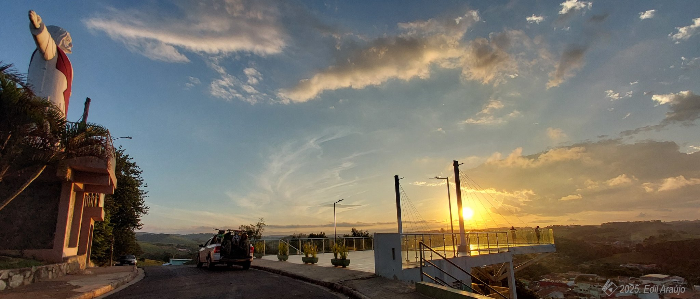

O Pôr do Sol no Mirante é Incrível!
Mirante Alto do Cristo – O Ponto Mais Alto da Sua Viagem!
Prepare-se para viver momentos inesquecíveis no Mirante Alto do Cristo, o lugar onde a natureza, a emoção e a beleza se encontram! Localizado no ponto mais alto de Ribeirão Grande, esse mirante oferece uma vista panorâmica de tirar o fôlego, perfeita para eternizar momentos especiais com amigos, família ou em celebrações como aniversários, casamentos e eventos únicos.
O pôr do sol aqui é um verdadeiro espetáculo da natureza: o céu se pinta de cores vibrantes enquanto o sol se despede atrás das montanhas, criando um cenário digno de cartão-postal. Tudo isso em uma estrutura moderna, onde engenharia e design se integram perfeitamente à paisagem natural.

O mirante, situado diante de um dos pontos mais altos da cidade, é um convite ao encantamento. Construído na década de 1980, o monumento ao Cristo se transformou em um dos símbolos mais marcantes de Ribeirão Grande. Agora revitalizado, o local conta com:
• Uma passarela panorâmica de aço e vidro para aquela selfie perfeita;
• Escadarias restauradas e uma nova rampa de acesso inclusiva ao Cristo;
• Lanchonete e sanitários para o seu conforto;
• E um elegante guarda-corpo em inox, que garante segurança sem tirar a vista.
Como Município de Interesse Turístico, Ribeirão Grande reafirma seu destaque no ecoturismo com essa nova atração que valoriza ainda mais sua infraestrutura e recebe os visitantes com carinho e estrutura.
E não pare por aí: saboreie a autêntica culinária local, rica em sabores típicos e tradições, e mergulhe na cultura acolhedora e vibrante da região.
O Mirante Alto do Cristo é mais que um ponto turístico — é uma experiência única, onde cada olhar revela uma nova emoção.
Venha se encantar com Ribeirão Grande. Viva essa vista. Viva esse momento.